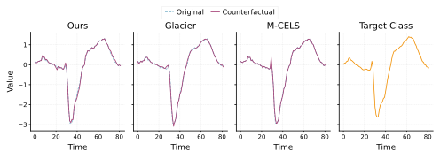
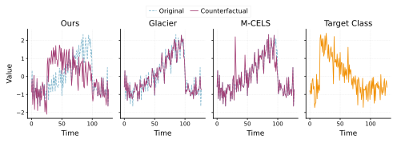

Towards Plausibility in Time Series Counterfactual Explanations
We present a method for generating plausible counterfactual explanations (CFEs) for time series classification via gradient-based optimization in input space. Plausibility is enforced by aligning the generated CFE with \(k\)-nearest neighbors from the target class using soft-DTW — a differentiable relaxation of dynamic time warping. The optimization objective balances validity, proximity, sparsity, and the novel soft-DTW plausibility term. Across eight datasets, our method achieves perfect or near-perfect validity while outperforming baselines in distributional alignment with the target class by up to an order of magnitude in DTW distance.
Introduction
Counterfactual explanations (CFEs) answer the question: what minimal change to the input would alter the model’s prediction? (Guidotti 2024; Wachter et al. 2017). They are particularly valuable for time series classifiers used in healthcare (Ullah et al. 2020), finance (Jurgovsky et al. 2018), and industrial systems (Markovic et al. 2023), where architectures such as ROCKET (Dempster et al. 2020) and InceptionTime (Fawaz et al. 2020) achieve high accuracy but remain opaque.
A valid CFE for time series must do more than flip the classifier’s prediction — it must preserve realistic temporal structure. Existing methods enforce plausibility either indirectly through autoencoder reconstruction (Wang et al. 2024, 2021) or by substituting segments from real training examples (Ates et al. 2021; Delaney et al. 2021), neither of which provides an explicit, differentiable alignment with target-class temporal patterns.
We address this by incorporating soft-DTW distance to target-class nearest neighbors directly into the optimization objective, enabling smooth gradient-based optimization that produces CFEs aligned with real data.
Contributions:
- A gradient-based CFE method that enforces plausibility through soft-DTW alignment with target-class neighbors;
- Evaluation across eight UCR/UEA datasets on validity, proximity, sparsity, and plausibility (DTW distance and Isolation Forest Score);
- Qualitative analysis showing that competing methods produce adversarial-looking perturbations where ours preserves temporal realism.
Method
We seek a counterfactual \(X'\) for a time series \(X\) with predicted class \(\hat{y} = f(X)\), targeting \(y_{\text{target}} \neq \hat{y}\). The optimization objective is:
\[ \mathcal{L}_{\text{CF}} = \mathcal{L}_{\text{prox}} + \mathcal{L}_{\text{sparse}} + \lambda \cdot (\mathcal{L}_{\text{valid}} + \mathcal{L}_{\text{DTW}}), \]
where \(\lambda\) controls the trade-off between plausibility/validity and proximity/sparsity. The individual terms are:
\[ \mathcal{L}_{\text{prox}} = \tfrac{1}{dT}\|X' - X\|_2^2, \qquad \mathcal{L}_{\text{sparse}} = \tfrac{1}{dT}\|X' - X\|_1, \]
\[ \mathcal{L}_{\text{valid}} = \max\!\left(0,\, \tau - p_f(y_{\text{target}} \mid X')\right), \]
\[ \mathcal{L}_{\text{DTW}} = \frac{1}{k}\sum_{Y \in \mathcal{N}_k(X,\, y_{\text{target}})} \text{DTW}^\gamma(X', Y). \]
Soft-DTW (Cuturi and Blondel 2017) replaces the hard minimum in standard DTW with a smooth approximation parameterized by \(\gamma > 0\), making the alignment cost differentiable with respect to \(X'\). As \(\gamma \to 0^+\) it recovers standard DTW. The plausibility term \(\mathcal{L}_{\text{DTW}}\) pulls \(X'\) toward the \(k\) nearest target-class training examples, encouraging the counterfactual to adopt realistic temporal structure rather than an adversarial perturbation. We optimize \(X'\) by gradient descent for a fixed number of steps with classifier weights frozen. Defaults: \(\lambda = 1\), \(k = 10\), \(\gamma = 1\).
Experiments and Results
Experiments use eight UCR/UEA datasets (Dau et al. 2019) spanning univariate and multivariate time series. We compare against Glacier (Wang et al. 2024) (evaluated on univariate only) and M-CELS (Li et al. 2024), using the settings recommended by their authors. The classifier is a three-block 1D CNN trained with Optuna (Ozaki et al. 2025).
Metrics: Validity (\(\text{Val}\uparrow\)), \(L_1\) and \(L_2\) distance (\(\downarrow\)), average DTW distance to 10 nearest target-class neighbors (\(\text{DTW}\downarrow\)), and Isolation Forest Score (\(\uparrow\)).
| Dataset | Method | \(\text{Val}\uparrow\) | \(L_1\downarrow\) | \(L_2\downarrow\) | \(\text{DTW}\downarrow\) | Iso Forest\(\uparrow\) |
|---|---|---|---|---|---|---|
| CBF | Ours | 1.000 | 9.871 | 1.071 | 0.194 | 1.000 |
| Glacier | 0.360 | 4.062 | 0.540 | 1.415 | 0.987 | |
| M-CELS | 0.226 | 1.500 | 0.486 | 2.402 | 0.984 | |
| TwoLeadECG | Ours | 1.000 | 1.446 | 0.214 | 0.016 | 1.000 |
| Glacier | 0.233 | 0.484 | 0.115 | 0.064 | 1.000 | |
| M-CELS | 0.970 | 0.245 | 0.119 | 0.302 | 0.879 | |
| GunPoint | Ours | 0.975 | 4.478 | 0.491 | 0.155 | 1.000 |
| Glacier | 0.000 | 0.639 | 0.170 | 0.436 | 1.000 | |
| M-CELS | 0.425 | 0.129 | 0.074 | 2.317 | 0.925 | |
| Earthquakes | Ours | 1.000 | 48.985 | 2.441 | 0.775 | 0.924 |
| Glacier | 0.000 | 8.528 | 0.661 | 1.907 | 1.000 | |
| M-CELS | 0.174 | 6.765 | 1.167 | 0.288 | 1.000 | |
| Coffee | Ours | 1.000 | 5.979 | 0.489 | 0.064 | 1.000 |
| Glacier | 0.455 | 9.182 | 0.795 | 1.024 | 1.000 | |
| M-CELS | 1.000 | 0.527 | 0.183 | 0.423 | 0.636 | |
| ItalyPowerDemand | Ours | 1.000 | 0.869 | 0.222 | 0.015 | 1.000 |
| Glacier | 0.023 | 0.307 | 0.107 | 0.054 | 1.000 | |
| M-CELS | 0.466 | 0.178 | 0.091 | 0.369 | 0.831 | |
| Cricket | Ours | 1.000 | 475.900 | 12.210 | 0.810 | 0.972 |
| Glacier | N/A | N/A | N/A | N/A | N/A | |
| M-CELS | 0.194 | 54.403 | 2.636 | 65.924 | 0.888 | |
| Epilepsy | Ours | 1.000 | 68.130 | 3.138 | 3.445 | 1.000 |
| Glacier | N/A | N/A | N/A | N/A | N/A | |
| M-CELS | 0.272 | 14.807 | 1.623 | 19.213 | 1.000 |
Validity. Our method achieves perfect or near-perfect validity on all datasets. Baselines fall well short: Glacier scores 0.360 on CBF and 0.023 on ItalyPowerDemand; M-CELS reaches at most 0.970.
Plausibility. We achieve the best DTW score on every dataset, often by an order of magnitude — e.g., 0.016 vs. 0.302 (M-CELS) on TwoLeadECG, and 0.810 vs. 65.924 on Cricket. Isolation Forest Scores are perfect on six datasets and competitive on the remaining two.
Proximity / sparsity. Our \(L_1\) and \(L_2\) values are consistently higher than the baselines, reflecting the inherent trade-off: enforcing temporal plausibility requires larger, more structured modifications than simply minimizing perturbation magnitude.
Qualitative Results
The figures below compare counterfactuals on TwoLeadECG and CBF. On ECG, both our method and M-CELS capture the prominent target-class peak; Glacier produces subtle changes that miss it. On CBF — three geometrically distinct classes — our method produces a CFE that clearly adopts the target shape, while Glacier and M-CELS generate perturbations that resemble adversarial noise.


Limitations
Soft-DTW has quadratic complexity in sequence length, making the approach expensive for very long series. The \(k\)-NN plausibility term also assumes the target class has a consistent temporal structure; in highly multi-modal classes, alignment with a local neighborhood may not produce globally coherent counterfactuals.
Conclusions
We introduced a gradient-based method for generating plausible time series CFEs via soft-DTW alignment with target-class nearest neighbors. The method achieves near-perfect validity and substantially outperforms existing approaches in plausibility, at the cost of larger perturbations. This confirms that meaningful temporal realism requires larger, more structured changes than purely proximity-minimizing methods admit. Future work will explore generative density models to better handle multi-modal target classes.
Supported by the National Science Centre (Poland), Grant No. 2024/55/B/ST6/02100.